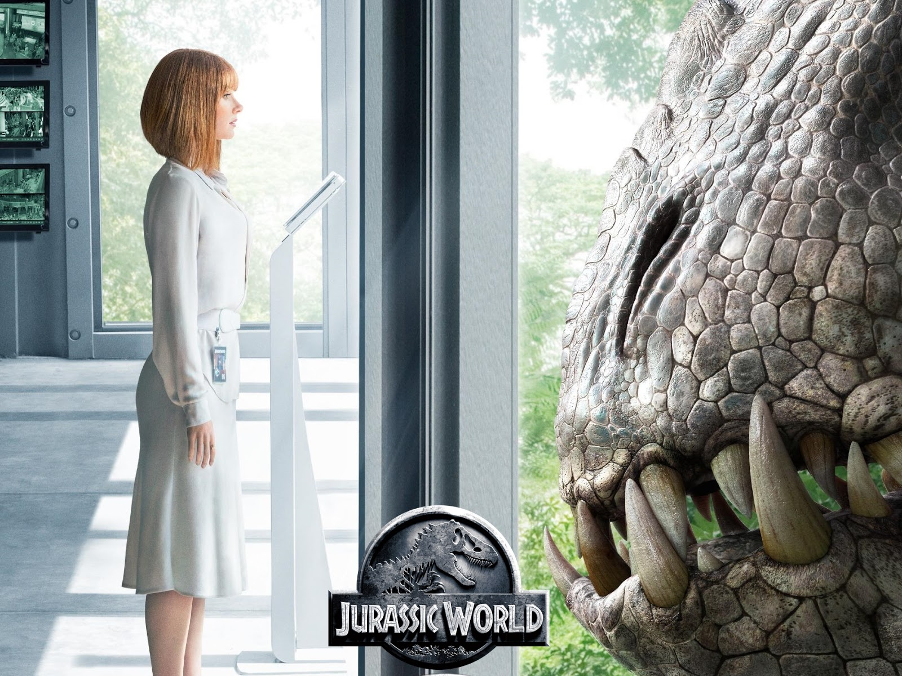
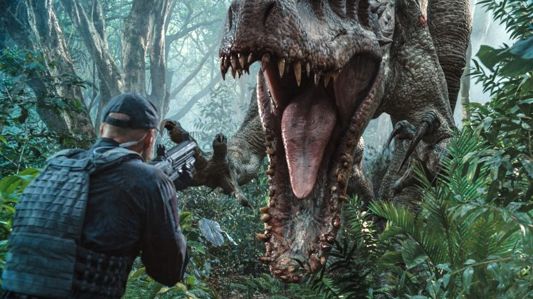
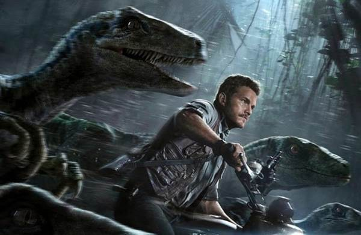
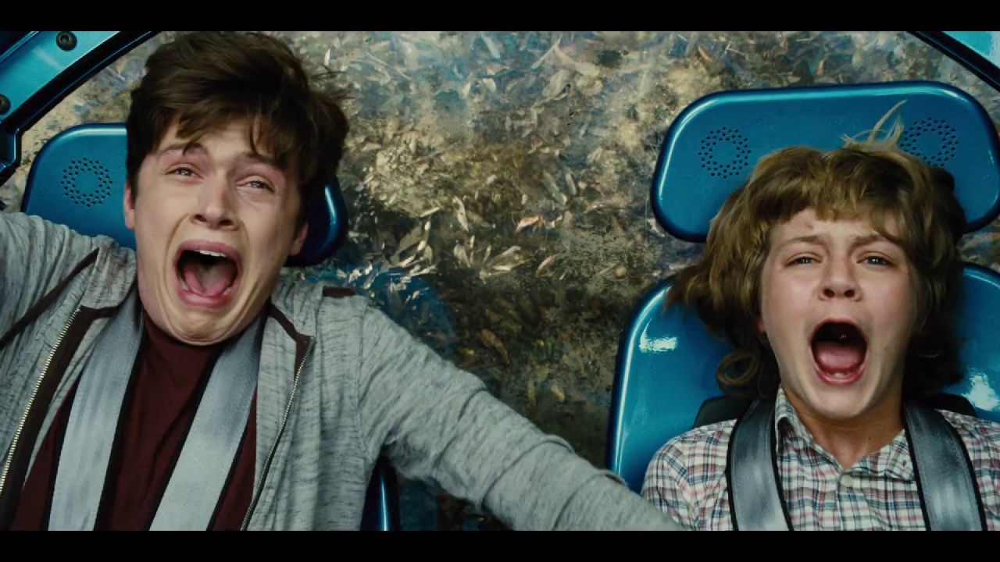

JURASSIC WORLD
Jurassic World (bra: Jurassic World: O Mundo dos Dinossauros) é um filme estadunidense de 2015, dos gêneros ação, aventura e ficção científica, dirigido por Colin Trevorrow, com roteiro dele, Derek Connolly, Rick Jaffa e Amanda Silver baseado nos personagens criados por Michael Crichton.
Sinopse
Um dinossauro geneticamente modificado no Parque dos Dinossauros põe em risco toda a segurança da ilha Nublar, que recebe 10 milhões de visitantes todos os anos para o parque temático e naquele dia especial é visitado pelos sobrinhos da administradora, Claire.




Para mais informações acesse: https://pt.wikipedia.org/wiki/Jurassic_World